Matigsalug Manobo Healthbooks
Previous Healthbook Up to main Healthbooks page Next Healthbook
Vernacular Lexicon
A
B
BAP
BL
D
E
G
H
I
K
KI
L
LA
LIP
M
N
O
P
PA
R
S
SE
SIN
T
TE
TIN
U
V
W
Y
Z
Healthbooks
Sabekan aldew, miggendiye te engki Lolita ka anaken din ne migpalpallahuy.
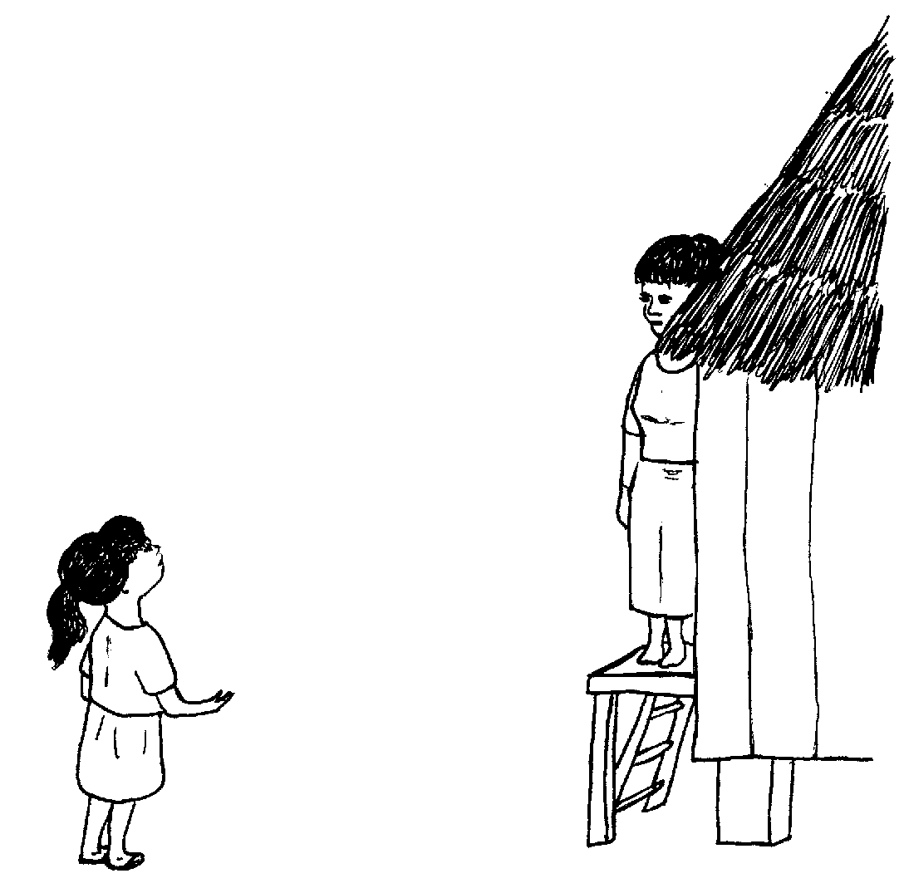
Ne migpangumew, “Insuhu a ni ine neg peendiyeen ka su eg-anak e sikandin!”
Naaldek amana si Lolita, ne migkahi diyet ki Inuk te asawa rin, “Eggendiya a kag bulig kandin piru prublima su ware e re due nekeuyamu, piru nakatameng ad dengan te dueg uyamu teg lesutan.”
Ne migkahi si Inuk diyet kandin te, “Due keilangan neg gimuwen nu.”
“Mahaan deg lesut ka bate tenged su kene ma ne sikan din pad eglesuti. Iyan de mananey eglesuti ka egpanganayan pad.
“Emun ke kene pad eglesut ka bate taman teg senge ka aldew e wey minsan egpanaman-taman din egginehed seled te hep-at ne uras, wey ke eglangeseen e te kene pad eglesut ka bate, wey ke eggingume e te sabekan aldew ka napigsaan te inugpaan, keilangan ne igpeendiyad sikandin te huspital su due me duktur neg palesut kandin diye.”
Ne migkahi si Inuk te, “Ka hun-a neg gimuwen nu, keilangan neg lu-luan nu ka belad nu wey egsebbunan.”
Ne migpabulus man-e sikandin ne migkahi te, “Emun keg bunsud din egginehed, keilangan neg gen-genan nu ka ulu te bate eyew egpakatulitu ka ulu rin ke hendei kag bayaan. Iling kayi te mennika ni Iwayan ne igpapitew ku keykew.
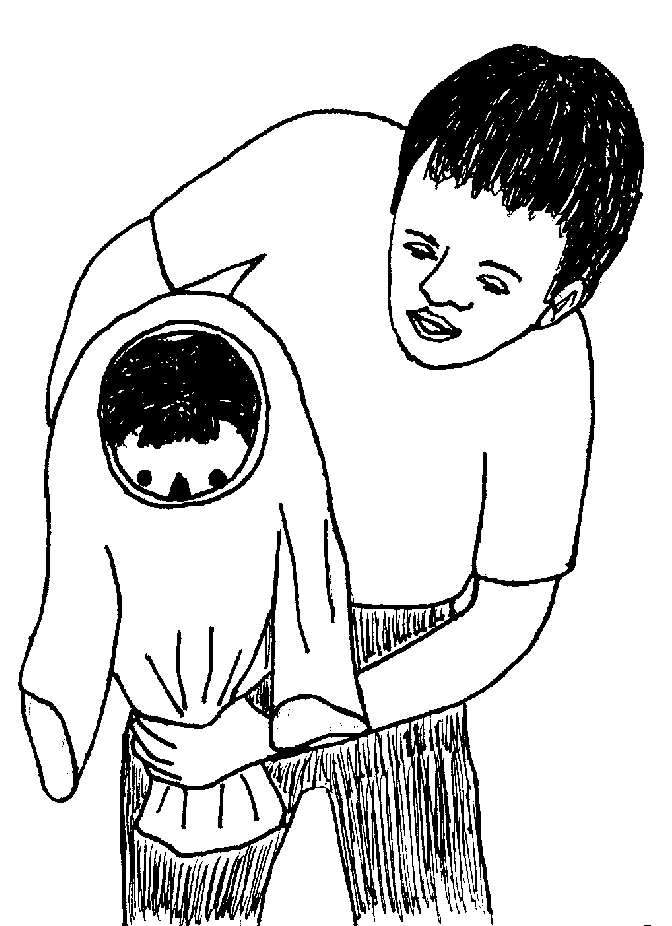
“Eglangkeb ka bate neg lesut. Emun ke masiyapat neg lihawang ka ulu te bate, egkahisian buwa ka iney.”
Ne migkahi si Inuk te, “Mesi eglihawang e ka ulu te bate, pitawa nu ka pused ke nakabelebed naa te lieg. Keilangan neg tamperen nu sika ke amana neehet.
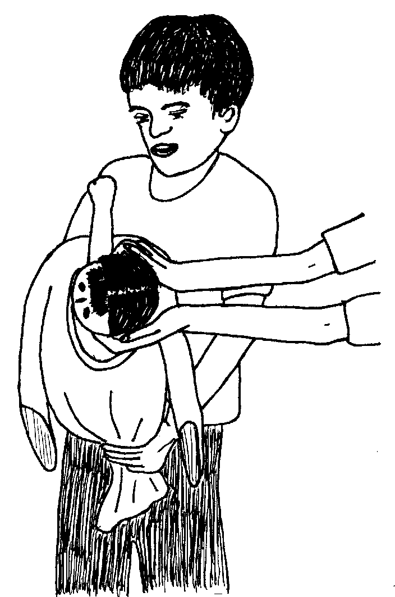
“Palingia nu ka ulu te bate, ne emun keg ginehed e man-e ka malitan, keilangan ne pahanganari nu teg wangi-wangi ka ulu te bate su eyew egpakalihawang langun.”
Ne migpabulus si Inuk ka migkahi te, “Emun keg lesut e ka bate, keilangan ne iyan nu itamped te pused ka malinis ne gepes.
“Keilangan ne ieled nu seled te sampulun minutus te egkale-kale ne weyig ka iggiket wey igpisang te pused ne gepes.”
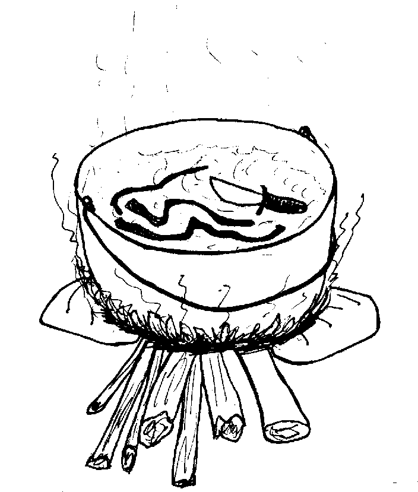
Ne migkahi si Inuk te, “Keilangan neg ay-ayaran nu su emun ke kene, egpakaseled ka kahew neg katitanus ka pused te bate ne kema keg patey buwa.”
Ne migtabak si Lolita ne migkahi te, “Uya, iling due ka neyitabu te sumbaley ta dengan ne miglesutan.”
Ne migkahi si Inuk te, “Wey nud e ipalesut ka inulunan keg kiteen nud neg malayat e ka pused neg pakalihawang ne due langesa.
Ne migkahi man-e sikandin te, “Keilangan neg gen-genan nu ka bugtul rin samtang egpahanganaran nu teg weil-weil ka pused su eyew keneg lihawang ka aanakan.”
Ne migkahi si Inuk te, “Ka ispurtanti neg gimuwen nu eyew kenad eglanglangeseen ka suled nu, keilangan ne eghilhiluten nu ka bugtul rin.
“Wey nu penpeneki teg hilut ka bugtul rin keg makehal e wey ka karakel iling te beungun. Su sabeka sika ne paahi te pegpeengked te langesa.
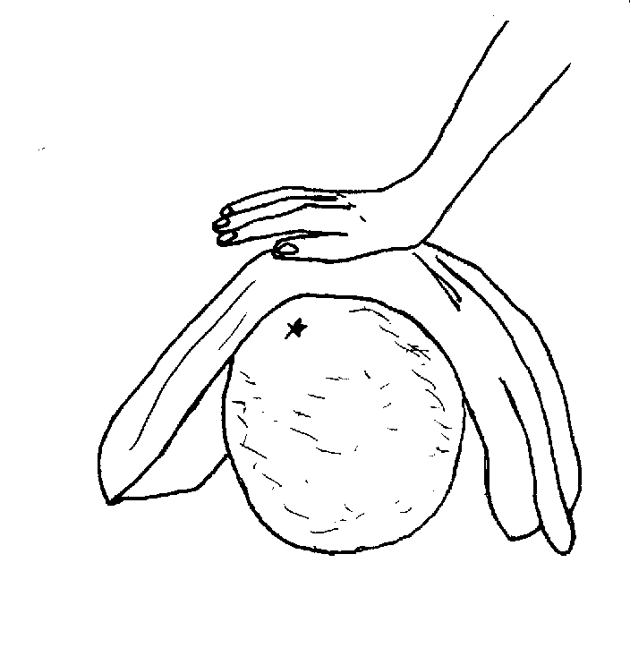
“Piru keilangan neg laslasiyan teg hilut ka bugtul rin taman teg makehal e man-e iling te beungun. Su emun ke kene pad egmakehal ka bugtul rin, sikan naa kag langeseen din e man-e.”
Ne migkahi man-e si Inuk te, “Keilangan ne egsalut din egpasusu te anak din su egpakabulig degma sika te pegpeengked te langesa.
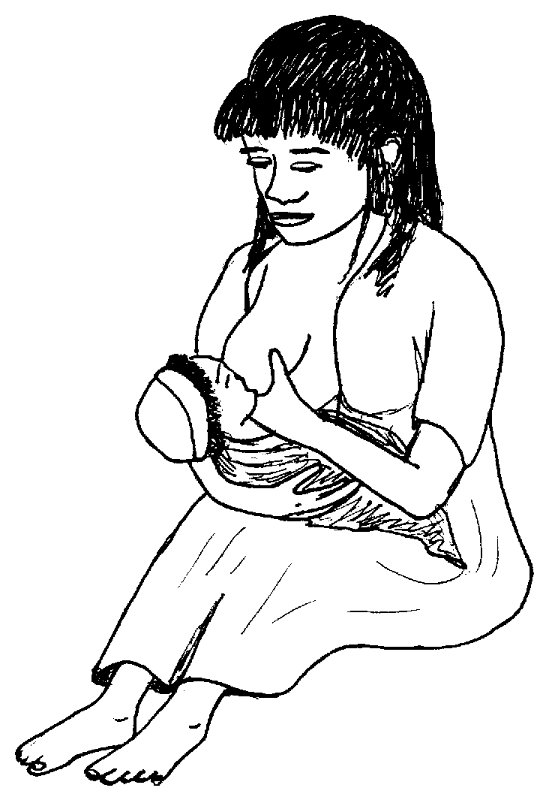
“Abpas kad due wey hendiyei nud sikandin!”
Ayunan ni Lolita te mig-iyal-iyal ne miggendiye te ugpaan te suled din. Te pegginguma rin, malasi egbalbalatiki ka suled din.
Migdagdahew impakale-kale si Lolita te weyig wey in-eled din e ka gepes wey ka igbagkes te pused.
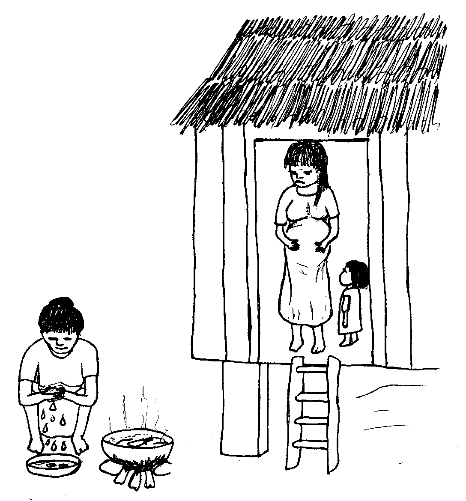
Nataman mig-ayad-ayad e migpanlu-lu sikandin te belad din.
Te ware naluhey, migbunsud e migginehed si Bibing. Te pegsamsam ni Lolita, mania te nasamsam din e ka ulu te bate neg lihawang e.

Pahanganari rin teg palihawang ka ulu te bate duma te pegsamsam te lieg te bate ke nabeleberan naa te pused, piru ware ded iya.
Te pegpalingi din te ulu te bate, henduen din pad pahanganari teg husud ne nataman nakalihawang e man-e ka sabekan pamanayen. Ne nataman migpahanganaran din e man-e teg husud ka dangeb ne pamanayen ne nataman miglesut e ka bate.
Amanan nahale ka taltalaanak su lukes ka bate, su neelin ne malitan ka tatelun kakey rin.
Migsinehew ka bate te meemen ne migmaangkag sikandin wey te nalnalingenngen e migmalalab e man-e.
Migbagkes ni Lolita ka pused te bate te katatelu wey iyan din intamped ka malinis ne gepes.
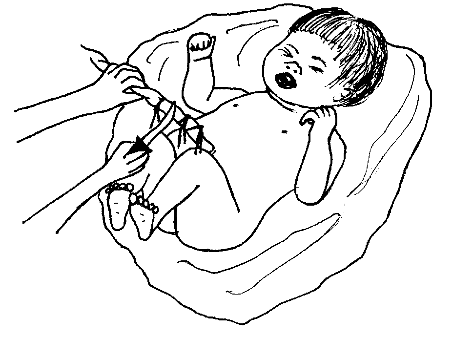
Ne migkahiyan din e ka suled din te, “Bunsuri nud e teg pasusu ka bate.”
Sahuhune man-e ne migsirit ka langesa ni Bibing. Te pegsamsam ni Lolita, mania te migkepes bes e ka aanakan.
Pahanganari rin e man-e teg weil ka pused, piru nakanengneng din te emun keg eggemhemenan din teg gusud, egpakaruma ka aanakan wey ke egkahisi naa ka inulunan.
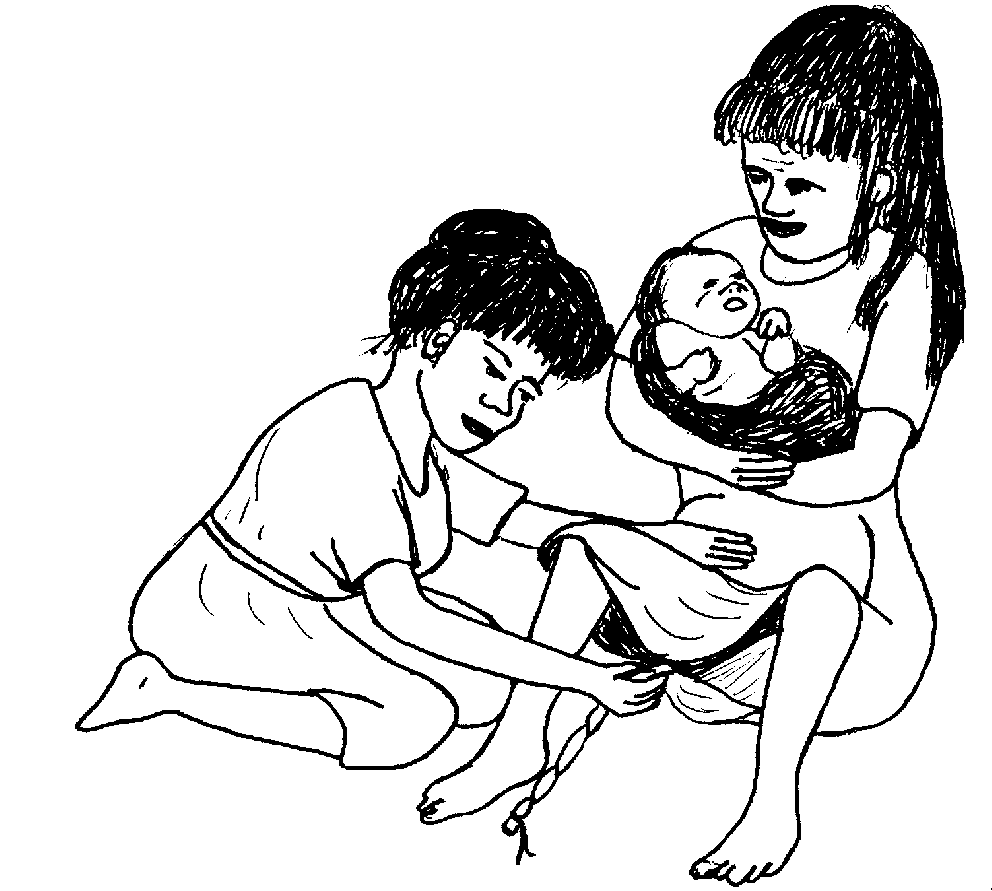
Ke egkahisi ka inulunan, eglangeseen e man-e te dakel.
Ne migginehed e man-e ka suled din ne nataman miglesut e ka inulunan.
Ne inhilutan ni Lolita ka aanakan te suled din wey nakapasusu e sikandin te anak din.
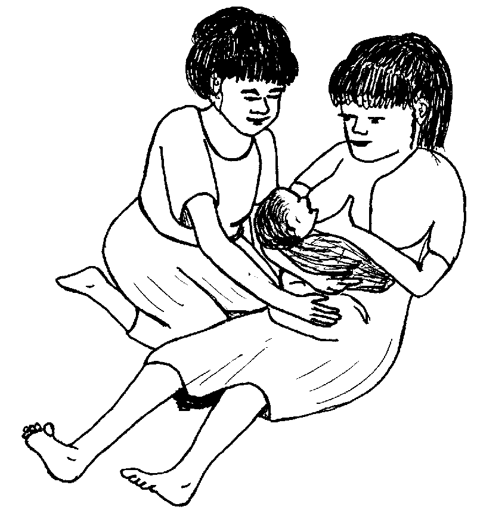
Te ware naluhey, deisek naan de ka langesa neg ligwang.
Amana degma ne nahale si Lolita su nalaggew sikandin te an-anayan.
Seup ne simana, migleuy e man-e si Lolita ki Bibing. Nakita rin ne amanan meupiya ka talaanak.
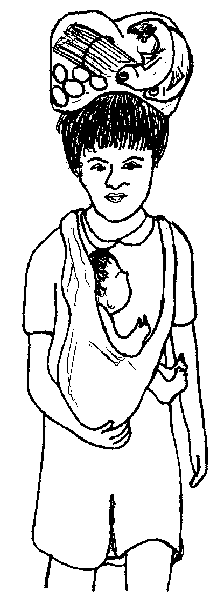
Migpanguyanan ni Lolita si Bibing te me gulay, isda, wey me atelug, wey ingkahiyan din si Bibing te keilangan neg keen din tagse aldew te iling due su egpakabehey te meupiyan peglelawa.
Impitew ni Lolita ka ilis te mata ni Bibing ke nekey ka batek piru bayew man ded egmalalab iling te kandin.
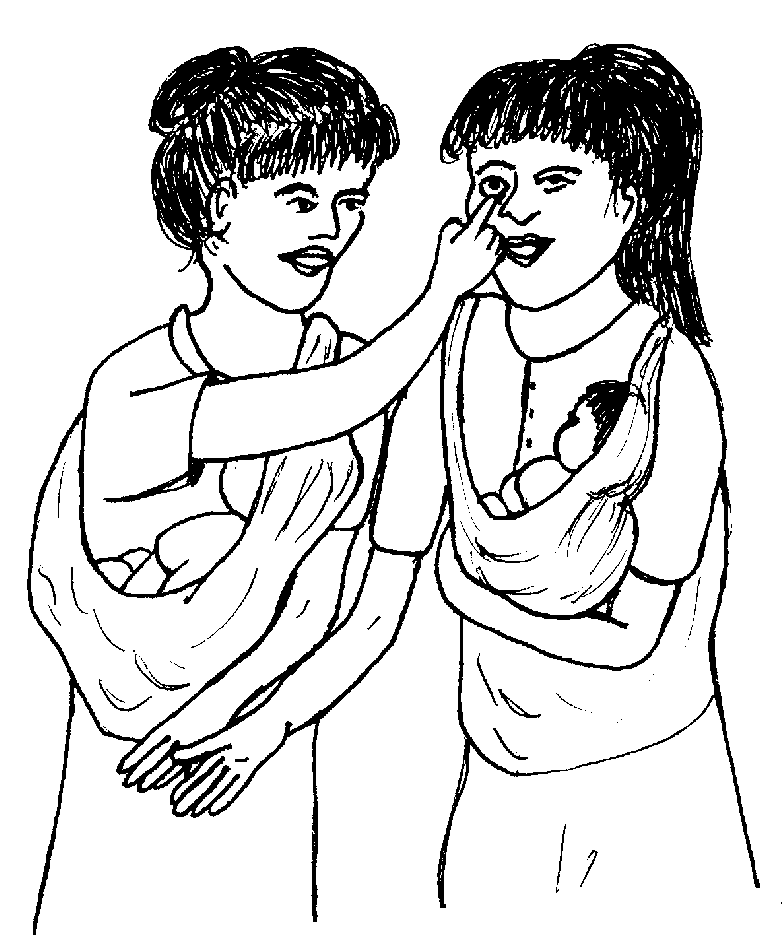
Ne migkahi si Lolita te, “Ingkahiyan a ni Inuk te keilangan neg tengtengan ku ka batek te mata nu su emun ke makalawag, dakel naa ka langesa nu ne naawe.
“Ke iling due, keilangan neg inum ka te tablitas neg ngaranan te iron tagse aldew su eyew egmanakel kad man-e.”
Ne migkahi si Lolita te, “Ingkahi man-e si Inuk te keilangan neg peimyunaysan nu ka bate keg gendini ka me duktur te seup ne bulan.”
Ne mig-inse si Bibing te, “Mania? Ispurtanti bes ka pegpeimyunays?”
Ne migkahi si Lolita te, “Ka pegpeimyunays egpakabulig te lawa te bate ne keneg keugpaan te kahew ne sika ka egpakarereet te bate. Sikan naa ka keilangan neg peimyunaysan ta ka me bate.”
Ne migkahi si Bibing te, “Due narineg ku diyet duma ne delikaddu kun kag peimyunays.”
Ne migpangguhuran e ni Lolita si Bibing te, “Sengekakuwa ne egdatengen ka eg-imunayisan wey sengekakuwa egmemasakit ka me laplap wey keg derehes naa te pilan aldew. Piru kenen eleg ne igkalaggew sika su meupiya pad kag keimyunaysan kuntere te ware, su delikaddu emun egderalu ka bate te titanus wey ke tipdas.”
Migtimul rin man-e ka migkahi te, “Egkaayun man-e neg pakigkita ka te me nars eyew egkabehayan ka te duman tambag.”
Ne migkahi si Bibing te, “Salamat amana te pegbulig nu. Nahale a amana te peggendini nu su nakabulig amana kanami te daruwa ka tambag nu.”
Nekey-a ka duman palinneu teg lehenan ne keilangan ne igpehuspital e?
Mamenua ka malehet ne peglesut te bate?
Mania te ispurtanti neg pakalkaleen ka weyig neg subbukan te gepes wey ka iggiket te pused?
Nekey-a ka duman palinneu ne mahaan eglesut ka inulunan?
Nekey-a ka duman ispurtanti neg gimuwen eyew eg-engked ka eglangesa te peglesut te bate?
Nekey-a ka meupiya neg keenen ne igpakeen te iyam ne miglesutan?
Mania te ispurtanti neg peimyunays te bate?
Emun keg gingume e te sabekan aldew, wey keg gingume e te hep-at ne uras kag ginehed, wey ke eglangeseen e te kene pad eglesut ka bate, wey ke miggingume e te sabekan aldew ka napigsaan te inugpaan.(Lukib 7)
Eggun-a ka ulu eglihawang eglangkeb wey keg lepew e ka ulu, egpakiliren ka pamanayen degma. (Lukib 9, 11)
Eyew egpatey ka me kahew, wey eyew keneg katitanus su sika kag pekeyimatey te bate. (Lukib 13)
Emun egsirit ka langesa, egkewusud ka pused wey egkiles ka aanakan. (Lukib 14, 27)
Igpalesut ka inulunan egpahanganari wey eghiluten ka aanakan diyet bagtul taman teg makehal e iling te beungun. Pasusuwen ka bate diyet iney. (Lukib 15, 17, 19, 29)
Me gulay, isda, atelug, wey manuk. (Lukib 31) Keilangan man-e neg peinumen te dakel ne weyig.
Eyew keneg utengan te me kahew te titanus wey me duman daldaluwen. (Lukib 34, 35)
This page last updated: 28-Dec-2019
Copyright © 2009-2010